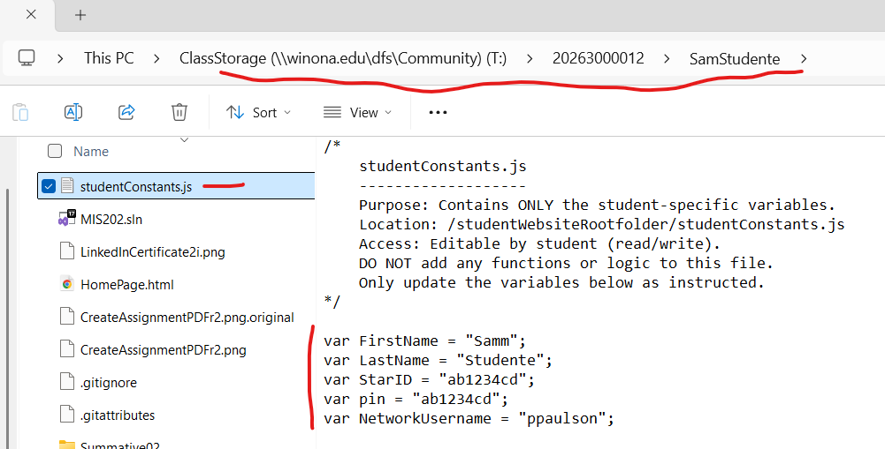

Complete the steps in the D2L Announcement 'Core Website Files' before continuing.
This ensures the files and folders needed for your course website will function properly.
Learning Objectives
This assignment introduces skills needed for this course, and begins development of a digital technology toolkit that will serve you well in your career.
After completing this assignment you will be able to:
- Organize files into a OneDrive-backed folder structure
- Capture and label screenshots using the Snipping Tool and OneNote
- Print your documentation to a PDF file and upload it to D2L
- Edit your studentConstants.js file to personalize your future web forms
- Connect to the WSU network drive (T:)
- Configure multi-monitor support using a USB-C dock
You will create one PDF file that contains screenshots documenting the work completed in this assignment.
This PDF will be uploaded to the D2L Assignment folder titled 'Formative00_Part1'.
Make sure you have Windows 11 installed, and you have the option 'Microsoft Print to PDF' in the Print Dialog Box.
If not, contact a TA or the professor.
 Print dialog box
Print dialog box
ScreenShots->Snipping Tool + OneNote
- Open Microsoft OneNote on your laptop.
- Create a new page and name it
Formative00_Part1.
- Save this
Formative00_Part1.pdf file into your '
- Use the Snipping Tool to take each required screenshot (Ex1A, Ex1B, Ex2, Ex3).
- After each snip, press
Ctrl + V to paste the screenshot into your OneNote page.
- Label each screenshot clearly (e.g., "Ex1A – OneDrive File Structure").
- Once all images are added, go to File > Print and choose Microsoft Print to PDF.
- When all screenshots are done you will upload the PDF file to the D2L Assignment folder: 'Formative00_Part1'.
Before proceeding you MUST have OneDrive for Business (OneDrive - MNSCU) installed and configured.
Install it per the resources in the Assignment Overview.
If you are not familiar with Windows File Explorer please review this LinkedIn Learning course, ' Windows 10: Organizing Files and Folders '
Remember-no spaces in file or folder names-only use 'a-Z', '0-9' and the underscore character.
Windows File Explorer will organize the files and folders needed to complete coursework.
Using OneDrive for Business provides an automated backup of these files-for this class and others.
In this class File Explorer is used-
1-To create folder structures that organize your work, such as screenshots to prove you have completed Exercises.
These items are stored on your laptop, and One Drive for Business automates the backup process to the cloud.
2-To create a local repository for your course website, which will be done in Project01.
These instructions reduce the chances of losing any class work.
Use Windows 'File Explorer' to create a specific folder structure under OneDrive - MNSCU
- Create a folder with this Class name
- Create a subfolder with this Assignment name. The path will be: '
When done with the Exercise 1 and 2 screenshots, your folder will look similar to the image below, but with the appropriate class:
 Folder with screenshots for first two Exercises
Folder with screenshots for first two Exercises
Note: clicking an image provides larger version in separate tab
Use the Snipping Tool to make a screenshot of File Explorer, showing the Class folder containing the Formative00 subfolder just created.
(25) 1. Save the screenshot as 'Ex1A' in the OneNote file just created at:
'
The screenshot file can be .jpg, .png or other appropriate image file format.
Screenshot Ex1A
Close the loop- login to OneDrive in the cloud to ensure that your files and folders are being synchronized with your laptop (and phone?).
- Open a browser to Office 365
- Log into Office 365 and access your account.
- Click the 'App Launcher' button in the top left corner, then click on 'OneDrive' .
- Check to make sure that the folder structure in OneDrive is exactly the same as the folder structure in your File Explorer OneDrive.
If not, time to start troubleshooting, you can have any number of problems.

- As a check, use NotePad and create a new file that contains the following text:
I love OneDrive
Save this file as 'ReadMe.txt' to the OneDrive Formative00 folder on your laptop for this class
After creating
the ReadMe.txt file, open the browser to the OneDrive Formative00 folder for this class, and in a few minutes the file should appear.
If not it is time to begin trouble shooting.
Use the Snipping Tool to make a screenshot of this file in OneDrive in your browser.
It will first look like this:

Then it will rename the file like this:

(25) 2. Save the screenshot as "Ex1B" in your OneNote file in the '
Screenshot Ex1B
Examine the top of this page, and notice that the First Name field contains MyFirstName, the Last Name field contains MyLastName, the StarID field contains MyStarID, and the Email field contains MyStarID@go.minnstate.edu.
You will enter your first name, last name, StarID, pin (same as StarID) and NetworkUsername into a studentConstants.js file to personalize your website and all other assignments for this class.
NetworkUsername information
This demonstrates the power of coding-to reduce errors, save time and add functionality.
Java Script and VB Script are used to automate and facilitate this course in the same manner as other software powering the web, ecommerce, everything.
Note 1: This course uses the T: drive for network storage. Follow these instructions:
Open File Explorer, select 'This PC' then in the ribbon select 'Map network drive'

Choose the T: drive
from the drop-down list, type in the path ' \\winona.edu\dfs\Community\ClassStorage ' check both boxes 'Reconnect and sign-in' and 'Connect using different credentials', then press the 'Finish' button.

When prompted for your credentials, enter 'winona\StarID' and your WSU network password, check the box 'Remember my credentials. then press the 'OK' button.

Note 2: if you are off-campus you will need to connect to the WSU VPN per the appropriate exercise, and then map your network drives. (mapping directions wrong 11/20/24)
Once you are connected to the WSU network you can use File Explorer to navigate to different drives such as
C: which is the SSD-Solid State Drive in your laptop
R: which is your personal network storage space-but may soon be replaced by OneDrive for Business
T: which is a network drive that contains folders for any of your courses which have requested network storage (like this one)
- Using File Explorer, navigate to the T: drive for this class, and find the folder with your WSU network username.
- Inside this folder find the file named studentConstants.js
- Right-click this file and 'Open With' Notepad, carefully entering your first name, last name, StarID, and pin in the places indicated.
NOTE: your 'pin' is the SAME as your StarID.
Be careful not to delete any punctuation marks.
- Save this file in the same location.
- Refresh your browser ( Ctrl + F5 ), and check to make sure your name appears correctly at the top of this assignment.
- If your first name, last name, StarID, or pin is incorrect, make sure to fix it-the proper submission of all your work in this course depends on it.
- If you still see 'MyFirstName' or 'default first name' instead of your first name on this page, it is time to begin troubleshooting.
- Once you are satisfied that your name, pin, and StarID are correct in your studentConstants.js file, you should browse to your website Home Page and submit your attendance.
- Check the confirmation message to make sure all information is correct.
Bring any error to the professor's or Teaching Assistant's attention.

- Check your email to verify that you also received a confirming email.
It will look something like this:

Use the Snipping Tool to make a screenshot of File Explorer with the Preview Pane active, showing the studentConstants.js file in the T: drive folder that you just updated using NotePad.
It will look like this:

constants.js File
(50) 3. Save the screenshot as "Ex2" in the OneNote file in your '
It can be a .jpg, .png or other appropriate image file format.
Screenshot Ex2
Ultrabooks are being built with fewer, but increasingly functional ports.
The WSU lease models are equipped with Thunderbolt (USB Type-C) ports that can provide connections to 2 external monitors, a wired network, and power-among other things.
As a result, you can plug your laptop into a USB Type-C dock with one cable and begin to work.
Note: after plugging your laptop into the USB Type-C dock, make sure that the 'Wired' connection icon is visible in the lower right 'Task Tray'.
 Wired Network Connection
Wired Network Connection
If the wired network icon does not appear when connected to a Somsen 301 USB Type-C dock, contact a TA or the professor for assistance-there is something wrong with your laptop, it may need a driver update, or more. See the very end of this Assignment for more information.
Note: Professor Paulson strongly recommends that before every class in Somsen 301 you connect your laptop to the HP USB-C dock and RESTART your compuer, applying updates as required. This will minimize computer problems. You have been warned!!!
Why are additional monitors necessary? Some reasons:
- Conveniently run multiple software applications on separate monitors
- Easily copy and paste data between open applications
- Participate in a web conference while also running other applications
- Watch class recordings while also running other applications
- Be able to keep Outlook open in one monitor at all times
To setup, use and disconnect an external monitor from your laptop follow the instructions below.

Three monitors, outlined in red, orange and blue.
When using external monitors you can have a 'public' and 'private' display. The primary laptop display can be private, viewable only by the user. The external monitors can be public, viewed by others. This allows the user to view class notes, email, Desire2Learn information privately on their laptop. The user can publicly share a website or spreadsheet.
- Connect the USB-Type C cable to the appropriate port, depending on your laptop model. See the teacher or TA if you need assistance.
- Right click a blank area of your desktop and choose 'Display settings', the Settings dialog box will appear.
- Refer to the figure below and adjust the settings to position and orient your monitors correctly. You may need to click the 'Apply' button several times during this process.
Note that:
- If three monitors do not appear, click the 'Detect' button.
- Under 'Multiple displays' all three should be set to 'Extend desktop to this display'
- Click the 'Identify' button to find the number of each monitor.
- "Monitor 1" will be your laptop display
- Make sure when Monitor 1 is selected (monitor icon highlighted in blue) that 'Make this my main display' box is checked.
- "Monitor 2" will be your external landscape display, and should be positioned above your laptop.
- "Monitor 3" will be your external portrait display, and should be positioned to the left of your laptop
- In the graphic, select your portrait monitor, number 3.
- Under 'Orientation' select 'Portrait'.
- Click 'Apply' in the lower right.

Display Setting Controls
- As necessary drag the monitors into the correct physical location as depicted in the 'Select and Arrange Displays' section at the top of the Settings dialog box. Then click 'Apply' to accept the changes. You may need to repeat this procedure.
- To test that you have configured your monitors correctly you should be able to move the Settings dialog box between all three monitors seamlessly by clicking and dragging on the dialog box title bar. Repeat the above steps as necessary until you can do this.
- Close the dialog box.
Display content on all three monitors, such as websites.
(25) 4. Use the Snipping Tool in 'Full-screen Snip' Mode to make a screenshot of all three monitors.
Save the screenshot as "Ex3" in the OneNote file in your '
Screenshot Ex3
You created one .pdf (portable document format) file from the screenshots taken above.
(50) 5. Upload your completed 'Formative00_Part1.pdf' file to the D2L 'Formative00_Part1' Assignment folder.
...